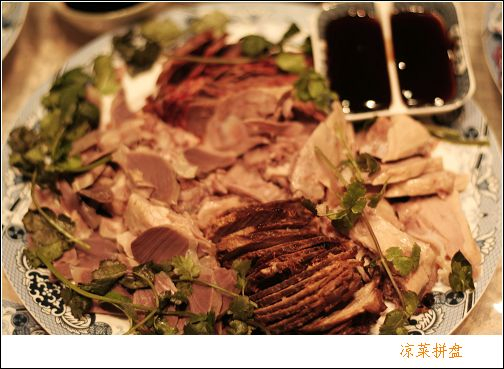
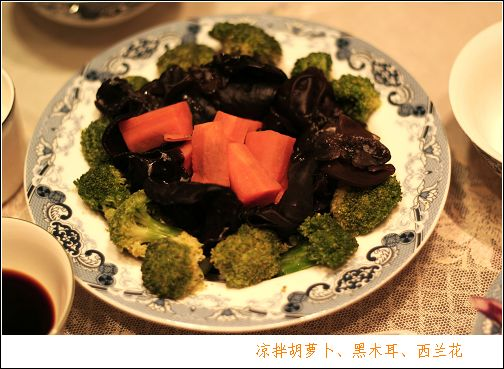
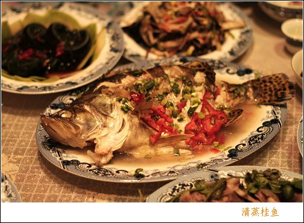
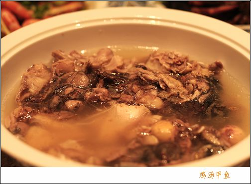
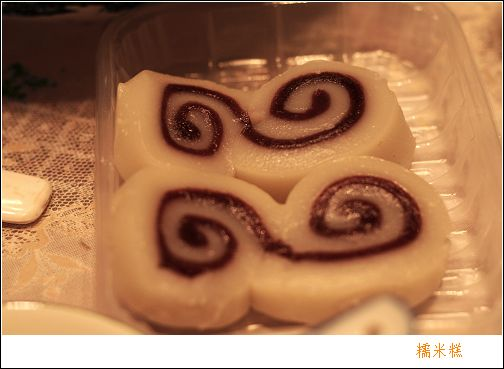

菠菜有凉拌吃法吗？菠菜不是热炒的吗？
在姐姐这里第一次坐到沙发哦 松花蛋的做法和北方这里不同～～ 祝你新春快乐
丰盛的年夜饭，温馨的大年夜，精彩又一年，新年快乐！
这么多好吃的,看着受不了,流口水...... 祝新年快乐!
口水流了一地。。。。能在家过年就是爽啊
新年快乐哦～
豆沙糯米饭很诱人。。。
mouth watering….. we had the new year eve’s dinner with friends in a sichuan restaurant, too spicy
呵呵，跟我口味一样，我也喜欢糯米饭的口感~
哈哈。越看越想吃。前段时间去无锡出差没看到这个。下次有机会去南京吃！
新年快乐!
新年快乐！
Hi Christina, hope you still remember me. Did you cook all these dishes? I believe I’ll dream of them tonight! You are still beautiful and wish you are beautiful forever!
这些都是你做的啊？？？我不信。。。。。。 要真的是你做的，你要做给我吃！！！
存档只读，评论已关闭。
Name (required)
Email (will not be published) (required)
Website
« 挥之不去 | 破五.迎财神 »


13 Responses to “年夜饭:)”
2007-02-17
菠菜有凉拌吃法吗？菠菜不是热炒的吗？
2007-02-17
在姐姐这里第一次坐到沙发哦
松花蛋的做法和北方这里不同～～
祝你新春快乐
2007-02-18
丰盛的年夜饭，温馨的大年夜，精彩又一年，新年快乐！
2007-02-18
这么多好吃的,看着受不了,流口水......
祝新年快乐!
2007-02-18
口水流了一地。。。。能在家过年就是爽啊
新年快乐哦～
2007-02-18
豆沙糯米饭很诱人。。。
2007-02-19
mouth watering…..
we had the new year eve’s dinner with friends in a sichuan restaurant, too spicy
2007-02-19
呵呵，跟我口味一样，我也喜欢糯米饭的口感~
2007-02-19
哈哈。越看越想吃。前段时间去无锡出差没看到这个。下次有机会去南京吃！
2007-02-19
新年快乐!
2007-02-25
新年快乐！
2007-02-26
Hi Christina, hope you still remember me. Did you cook all these dishes? I believe I’ll dream of them tonight! You are still beautiful and wish you are beautiful forever!
2007-02-27
这些都是你做的啊？？？我不信。。。。。。
要真的是你做的，你要做给我吃！！！
Leave A Reply
存档只读，评论已关闭。